Книга ведущего · Мифическое шествие гор: шаг за шагом · 12+ · 3–8 игроков + ведущий
Свадьба двух гор
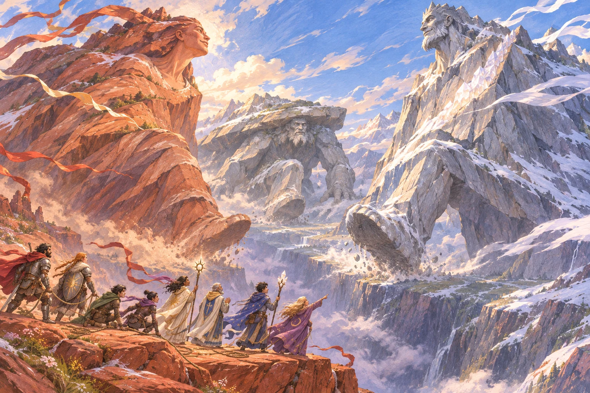
Гора Арема и пик Торвен решили пожениться и впервые за столетие тронулись с места: восемь больших шагов навстречу друг другу, до Высокого разлома, где их вершины коснутся. Вы — ходоки на их склонах: идёте туда, куда горы сами не видят, ставите ленту там, где должна сесть стопа, и подаёте общий знак. Но каменный исполин Ломан растёт, вклиниваясь в чужой шаг, и становится выше с каждым украденным шагом. На столе лежит дорожка шагов: сколько пролётов осталось между вершинами и насколько вырос тот, кто их крадёт.
Если партия изменила план
Перед чтением вступления сверьте место героев, присутствующих людей и предметы с итогом прошлого вечера. Если условия встречи отпали, сыграйте последствия там, где находится партия. Событие по расписанию может произойти за кадром. Герои узнают о нём от тех, кто был на месте.
Вечер 5. Если Торвен остановился до Косого моста
Сначала спросите, видит ли он Ломана со своего места и кто может ему сообщить о нём. Пока тень стопы не легла на дугу, отсчёт на мосту не начался. Отметьте, за что ходоки потратили выигранное время и где теперь стоят обе горы.
Вечер 8. Если одна из гор отозвала согласие
Дайте Ареме и Торвену ответить по отдельности. При отказе последнего наклона не будет. Сыграйте, как ходоки возвращают людей с подготовленных мест, и запишите положение склонов. Новый исход вечера — раздельные горы и добровольное возвращение.
Группа отказалась от задания
На гребень не ведём. Устроим встречу у подножий и спросим обе стороны, захотят ли они её. Оставляем горным общинам собственные сигналы отказа. Гости собираются внизу. Брак состоится только при согласии гор; одной готовой площадки недостаточно.
Игроки раскрыли тайну раньше
Сопоставим третий отпечаток с камнями с глазами, проследим движение третьего участника. Доступные свидетельства — Третий отпечаток, Камни с глазами. Ломан ставит правую ногу по чужому следу и наблюдает за движением через сколышей. Просим двух наблюдателей сравнить борозду и сколыши. Заметив Ломана отдельно от гор, выводим ходоков из его следа. Никого не заставляем завершить наклон в прежнем месте.
Партия уступила поле
Пыльники не дают прочесть следы на осыпи; отряд отступает без проводки. Пересчитываем тех, кто смог покинуть опасный участок. Передаём сигнал остановки и встречаем отставших у подножий. Гребень остаётся непроверенным, и свадьба там не назначена.
Карман ведущего
Для игры без подготовки: что говорят люди, места в стороне от главной дороги и прохожие. Пометки о правде слухов — только для ведущего; сказанное за столом становится фактом мира, лишь когда вы его подтвердите.
Слухи
«Горы Венца ходят раз в сто лет, по шагу за вечер. Кто пропустил шествие, тот следующее увидит уже дедом».
Правда. Так и есть: шаги медленные и редкие, и этот поход — свадьба, к Высокому разлому. Слух хорошо звучит в первом вечере, когда терраса только начинает подниматься.
«Гора не видит своей спины и пяток. Потому ходоки и нужны: глядеть туда, куда она сама не глядит».
Правда. Это основа шествия: ходоки разведывают постановку, показывают место лентой и подают общий знак. Слух повторяет то, что Ирдо говорит во втором вечере.
«Уронишь ленту в расщелину — гора споткнётся. Потому старые ходоки ленту к запястью вяжут».
Неправда. Суеверие: гора слушает знак, но решает сама, и упавшая лента просто пропадает. Привязывать ленты к запястью разумно из-за ветра, а не из-за приметы. Хорошая реплика для новичка.
«Торвен шутит раз в год, да так медленно, что до конца шутки никто не доживает».
Отчасти правда. Торвен и правда суховато шутит, и слова гор приходят медленно, но шутит он чаще, чем раз в год. Безобидное преувеличение; хорошо звучит перед вечером на Серебряном ребре.
«Дом ходоков не сдвинется, хоть весь Венец разом пойдёт: он стоит на камне, который никуда не ходит».
Правда. Дом стоит на неподвижной скале, единственной в Венце. Туда удобно возвращаться между шагами; слух ничего нового о сюжете не говорит.
«Каменный крикун ленты ест. Где он рядом, там их ветер и рвёт».
Неправда. Ложь: ленты рвёт ветер на плечах и гребнях, Ломан к ним равнодушен. Слух можно вложить в уста ребёнка из долины; опровергнуть его легко, и он никуда не ведёт.
«Арема смолоду самая смелая гора Венца: первой пошла, первой и заговорила».
Отчасти правда. Правда, что Арема сама выбрала свадьбу и пошла первой. Неправда в слове «самая смелая»: однажды она испугалась, и это её тайна седьмого вечера. Не подтверждайте и не опровергайте слух раньше её рассказа.
«Поднятая лента — веди, сложенная — стой. Так ещё прадеды горам показывали, так и мы покажем».
Правда. Знаки ходоков открыты всем; Сафф и Ирдо учат им во втором вечере. Слух ничего не добавляет к правилам, только напоминает о них.
«На тень горы не наступай: она почует и обернётся посмотреть, кто там».
Неправда. Примета долины: тень горы ничего не чувствует, и горы не видят своих подошв, как бы ни ходили по их тени. Безвредно; можно посмеяться вместе с Неми.
«Песок в Сухом зеве держит след, хоть год пройдёт. Там до сих пор лежат отпечатки старых шагов».
Правда. Это свойство места: песок мелкий и сухой, как мука. Слух указывает на следы, которые и так ждут героев в первом и втором вечерах, но не говорит, что в них прочесть.
Места в стороне
Колодец под неподвижной скалой
Узкий колодец у подножия скалы, на которой стоит Дом ходоков. Вода в нём ледяная и чуть отдаёт железом, а ведро привязано к верёвке открытой петлёй, как учит Ирдо. Ходоки пьют отсюда перед каждым шагом гор: говорят, вода с неподвижного камня держит ноги. На краю сруба вырезаны имена тех, кто водил горы в прошлое шествие, и многие уже не прочесть.
Скамья старых лент
Длинная каменная скамья у подножия Аремы, на которой ходоки после шествия оставляют свои ленты, выгоревшие и истрёпанные ветром. Лент там сотни, всех оттенков красного и серого, и они шуршат даже в безветрие. Садиться на скамью можно, а лент трогать нельзя: это чужие шаги. Под скамьёй кто-то давно поставил глиняную кружку, и в неё кладут мелкие камешки на удачу.
Пастушья ниша на ребре
Неглубокая ниша в боку Серебряного ребра, где пастухи пережидают ветер. Пол её устлан сухой травой, у входа сложен невысокий камень от сквозняка. Кварц в стене ниши светлеет, когда Торвен говорит, и пастухи шутят, что ночуют у горы за пазухой. На стене углём нарисованы козы, и у каждой подписано имя.
Лоток Звонцы
Деревянный лоток на нижней дороге через Круг двух подножий, под навесом из выцветшей парусины. Здесь продают ленты, верёвки, бубенцы и мел, а в дни шествия — ещё и горячие лепёшки. Над лотком висит связка бубенцов, которые звенят от каждого шага гор, и по их звону в долине узнают, какая гора пошла. Расплачиваются тут чем угодно, даже рассказом.
Верёвочный мостик
Шаткий мостик из верёвок и досок над ручьём у Круга двух подножий, единственная переправа нижней дороги. Ходоки чинят его после каждого шествия, потому что горы, ступая, всякий раз дёргают его корни. На каждой доске вырезан знак того, кто её ставил. Посередине одна доска новая, светлая, и на ней знака пока нет.
Прохожие
Звонца
Круглолицая торговка в платке с бубенцами по краю; пальцы в мелу, на шее связка лент всех цветов.
«Лента без узла — что шаг без ноги. Бери две, вторая на ветер!»
Может рассказать: По звону бубенцов над лотком умеет сказать, какая из гор сейчас шагает: у Аремы звон низкий, у Торвена дробный и высокий.
Мирко Козий Рог
Худой пастух с посохом из козьего рога и тремя козами, которые ходят за ним гуськом.
«Козы первыми чуют, когда гора повернётся. Глядите на коз, а не на небо».
Может рассказать: Знает, где на Серебряном ребре есть ниша, в которой можно переждать ветер, и проведёт туда короткой тропой.
Ветла Седая Петля
Сухонькая старушка-ходок с палкой и выгоревшей лентой на запястье; лента досталась ей от бабки.
«Бабка моя горам „стой“ кричала так, что голос неделю не возвращался».
Может рассказать: Помнит бабкины рассказы о прошлом шествии и знает, что Дом ходоков тогда стоял на той же скале, что и теперь.
Тимоша Камешек
Мальчишка лет двенадцати с полными карманами камешков и ободранными коленками; везде лезет первым.
«А я видел, как гора моргнула! Правда видел!»
Может рассказать: Знает, на каких уступах Пяточной террасы растёт съедобный горный лук, и угостит им, если его не прогонят.
Горан Медник
Плечистый кузнец в кожаном фартуке; на поясе связка железных петель для верёвок, руки в копоти.
«Петлю бей в трещину, не в гладкий камень: гладкий не держит».
Может рассказать: Сам ковал петли, что Ирдо вбивает у подножия Красного плеча, и на каждой выбил свой знак — маленький молоточек.
За десять минут до первой игры
Откройте первый вечер, прочитайте правду мира и участников. Остальные вечера — планы, их исход решают игроки.
Выберите пакет под фактическое число игроков. Первые три героя — готовое ядро; остальные добавляются по порядку. Возраст игрока не определяет героя.
Согласуйте темы, длительность и сигнал паузы. Передайте игрокам только players.html; раздатки выдавайте по отдельности после указанного открытия.
Откройте Мастерскую проекта, создайте личный черновик и импортируйте выбранный JSON через загрузку пакета. Проверьте состав и начало в предпросмотре. Запуск кампании подтверждает ведущий штатным действием.
Иллюстрации кампании (43) лежат в assets/ и показываются в книге; в уже запущенную кампанию их переносит scripts/campaign-shared/import-art.ts.
8 вечеров; Около трёх часов: повторение и дорожка шагов 10 минут, подготовка шага 75, перерыв 15, шаг 75, конец вечера 5. В вечер 1 сцены 70 и 80, в вечер 8 — 60 и 90.
В Медном Венце некоторые горы умеют ходить на каменных корнях и разговаривать лицами на собственных склонах. Их движения медленны, осмысленны и доступны остановке; они не видят обратную сторону своих плеч. Горы Венца ходят раз в столетие, медленно: один большой шаг длится целый вечер. Гора не видит своей спины и места, куда ставит ногу, поэтому маленькие ходоки ведут больших лентами трёх форм, а раз в шаг горы сами просят ходоков о помощи. Неподвижная скала с Домом ходоков стоит между ногами гор и не двигается. Всё это оригинальное фэнтези; герои используют обычные канонические классы третьего уровня.
Величие движущихся вершин, камень под ладонями, ветер на гребне; хвастливый исполин, которому страшно стоять низко; тёплый юмор без унижения.
Общий шаг, который нельзя сделать в одиночку
Высота, взятая чужим размахом
Маленькие ходоки ведут больших
Остановиться вовремя — тоже шаг
Границы
12+: высота, каменные обвалы без натуралистических травм, противодействие самоуверенного исполина. Люди не оказываются массово погребены или заложниками.
Нет принуждения к романтике, браку или телесному контакту. Персонажи игроков могут относиться к свадьбе дружески, профессионально или с любопытством.
Перед началом согласовать изображение высоты и падений. По желанию заменить вид в пропасть описанием широкой наклонной площадки; доступные решения и последствия сохраняются.
Пауза, пропуск и смена описания доступны без объяснений. Не использовать страх высоты реального участника как испытание характера.
В финальном бою с Верхушкой Ломана герой с нулём хитов соскальзывает во внутреннюю складку гребня: выбывает из боя, жив, приходит в себя после касания. Горы могут быть разбиты — это мифическое поражение, раскол камня, а не гибель людей.
Люди за столом
Смешанная группа подростков и взрослых: первый говорящий меняется каждую сцену. Возраст не назначает лидера, класс, сложность задачи или право распоряжаться чужим героем.
Каждый вправе ответить вслух, запиской, указанием на схему или пропустить ход обсуждения. Уточнение после письменного ответа адресуется самому автору, а не взрослому посреднику.
Для любого решения предложить равноправные вопросы: «Куда поставим следующую опору?» и «Какую цену этого пути мы готовы принять?» Простая формулировка имеет такую же силу.
Первые три героя достаточны: путь, наблюдение и сигналы доступны каждому без класса или заклинания. Герои четвёртого–восьмого мест добавляют ракурсы, а не обязательные ключи.
При разделении дать каждой группе одно заявленное действие, затем показать результаты вместе. Возвращать всех к указанному в сцене широкому уступу; не вести две длинные игры параллельно.
Отсутствующий герой остаётся на безопасном уступе; его сведения и вещи при согласии игрока доступны группе. Ведущий не принимает за него личных решений и не превращает отсутствие в наказание.
Все ключевые сведения открываются действием без успешного броска. Проверки дают удобство, время или сохранность выбранного имущества; отказ от риска открывает более длинный путь.
Около трёх часов: 10 минут повторить и показать дорожку шагов, 75 минут подготовки шага, 15 перерыв, 75 минут шага, 5 минут на картину конца вечера. Подготовка шага — не обсуждение за столом: каждое из трёх дел играется на склоне действием.
В сцене 2 каждый вечер нужны три места: у стопы с ловушкой Ломана, у места постановки и у точки общего знака (при Р 12–17 там нужны двое; при трёх игроках второй лентой считается НИП в этой точке — Сафф, Ирдо, Век или Эша). При трёх игроках каждый занимает одно; при четырёх и больше — пары, и «второй рядом» действует сам: держит ленту вместе, перебрасывает подъём, повторяет знак. В вечер 8 роли не закреплены: любой ходок у сигнального камня ведёт гору, любой на гребне держит Верхушку, и каждый раунд стол заново решает, кто что делает.
Масштабирование группы
3 игрока
Три дела в подготовке; в шаге — по ходоку у ловушки, у постановки и у общего знака (при Р 12–17 вторая лента — НИП в точке общего знака). В финале один ведёт обе горы с общего камня (если оба сигнальных камня донесены) или двое ведут со своих камней, а третий держит Верхушку; решайте каждый раунд. Неми и Сафф повторяют сбитый знак у своих камней по два раза за наклон каждый, но не ведут сами.
4 игрока
Три дела; четвёртый — «второй рядом»: страхует того, кто у ловушки, и сам действует — без броска держит с ним горизонтальную ленту, перебрасывает его проваленный подъём (раз за шаг) или повторяет сбитый знак. В финале двое ведут, двое держат.
5 игроков
Три дела, одно из них делают двое и получают удобство проверки. В финале двое ведут, трое держат, один из них у складки помогает упавшим.
6 игроков
Четыре дела в подготовке. Три пары в шаге. В финале пара у каждого камня, пара держит.
7 игроков
Четыре дела; седьмой стоит своей точкой рядом с Неми или Саффом: повторяет их знак и передаёт их слова, но решения не утверждает. В финале — как при шести, седьмой у красного или серебряного камня рядом с ними. В сцене 1 каждого вечера у седьмого своё дело — оно названо в проверке сцены.
8 игроков
Четыре дела; четыре пары в шаге (ловушка, постановка, общий знак, возврат). В финале четыре пары: два камня, гребень, складка; без восьми одиночных проверок подряд.
Первое чтение вслух
Медный Венец — кольцо красных и серебристых гор, чьи широкие уступы соединены каменными корнями. Некоторые горы Венца живые: они умеют ходить на этих корнях и говорят лицами, которые проступают на склонах там, куда гора сейчас обращается. Слова у них приходят позже движения губ — гулом в подошвах. Ходят горы редко, раз в столетие, и медленно: один большой шаг длится целый вечер. А видеть всего они не могут: гора не видит своей спины, обратной стороны плеч и места, куда ставит ногу. Поэтому в Венце есть ходоки — маленькие люди на больших склонах. Они разведывают, куда сесть стопе, показывают место лентами трёх форм и подают знак, по которому гора опускает ногу. Говорят, хороший ходок слышит гору раньше, чем она заговорит. Между ногами гор, на единственной неподвижной скале, стоит Дом ходоков: ленты на крыше, верёвки и рисунки склонов на стенах.
В этом году ходоков позвали на свадьбу. Красная гора Арема и серебристый пик Торвен с кварцевой полосой на ребре решили пожениться. Восемь больших шагов навстречу друг другу, по шагу в вечер, — до Высокого разлома, где их вершины наклонятся и коснутся. Если касание состоится, камень, говорят старики, срастётся над разломом, и горы будут стоять рядом целый век. Такой свадьбы в Венце не помнит никто из живых.
Вы — ходоки этой свадьбы. Вчера вечером вы поднялись на Пяточную террасу Аремы и заночевали на её широких плоских ступенях. Сейчас над долиной сереет рассвет, роса блестит на красном камне, и где-то глубоко под вами, в самой горе, начинается долгий медленный гул.
Правда мира · только ведущему
Арема и Торвен сами выбрали брак. Свадьба — шествие: восемь больших шагов навстречу друг другу к Высокому разлому, по шагу в вечер; на восьмом их вершины наклоняются над разломом и касаются. Если касание состоится, камень срастётся аркой, и горы простоят рядом век. Последний наклон нельзя отменить на полпути: вершины, не встретив друг друга, падают назад и бьются о стены разлома. Героям не поручено добиваться согласия гор: оно уже дано.
Горы не видят своих спин, подошв и места, куда ставят ногу. Ходоки ведут их: заранее разведывают постановку стопы, в миг постановки показывают место поднятой лентой, подают общий знак, по которому обе стопы садятся разом, и останавливают шаг сложенной лентой. Гора слушает знак, но решает сама.
Ломан родился сто тринадцать лет назад из пыли незавершённого шага Аремы: тогда она одна шагнула к Торвену и остановилась на наружном выступе своего плеча. Его собственный камень — красная плита: спина, руки и левая нога. Всё выше и правее — краденое: правая нога и высокая верхушка сложены из размаха, перехваченного в чужих незавершённых поворотах. Арема догадывается, откуда он; Ломан знает, что его камень красный, но не знает, чей.
Походка Ломана — главное раскрытие. Краденый камень не прирастает и стоит только на чужом движении: правую ногу он ставит лишь внутрь чужого шага и хромает на неё, а в тишине оседает и ходит низко, на четырёх опорах, положив верхнюю плиту поперёк плеч. Шов своего и краденого камня — в правом колене; на ветру он свистит, левая сторона молчит. Три независимых пути: следы в Сухом зеве, свидетельство Эши, наблюдение в Коленном амфитеатре; запасные — низкий проход на Косом мосту и слова Века.
До вечера 5 Ломан стоит высоко, следит за тем, кто первым начал большое движение, и вклинивается в его поворот; ложный первый жест и скрытый старт уводят его мимо. С вечера 5 он ходит сам, ночью и низко, и заранее ложится на место постановки, чтобы встать в опускающуюся стопу. Против этого работают вторая постановка и замершая доля: пока стопа неподвижно висит над ним, подняться он не может, а переползти на четырёх опорах успевает лишь один раз за шаг.
В вечер 8 Ломан лежит в разломе и посылает на гребень сходящихся вершин свою краденую верхушку — исполина ростом с холм. Она идёт к щели, пока вершины движутся, и оседает на колено, когда они ждут или когда её бьют по шву. Пока она стоит в щели, вершины не могут сомкнуться и отпрядывают. Если наклон кончится без касания, вершины падают назад на стены разлома или бьют в краденый камень, Торвен раскалывается по внутренней трещине под кварцевой полосой, и горы разбиты. Бой — не единственное условие: исход решают доли наклона, щель и ленты ходоков.
Если Ломан в тишине услышит правду о своей походке — от любого ходока, — а прежде кто-то предложил ему собственный шаг и сказал, что он из пыли Аремы, он может отозвать верхушку (при росте не выше 7). После свадьбы горы век стоят неподвижно, и краденая высота без чужого движения осыпается в любом случае; Ломан догадывается об этом и боится.
Будущие выпады, обвалы и исходы условны: ведущий подтверждает последствия действий за столом. Нижняя свадьба у подножий возможна, только если обе горы согласились на неё до начала последнего наклона.
Повороты сюжета
Только для ведущего. Сюжетные повороты держатся на мелочах, замеченных заранее: посейте их в названные вечера, а раскрытие отдайте героям, если они догадались раньше.
Исполин стоит на чужом
Ломан кажется могучим исполином, который растёт сам и станет выше гор. На деле его собственный камень — только красная спина, руки и левая нога; правая нога и высокая верхушка краденые и держатся лишь на чужом движении. В тишине он оседает и ходит низко, на четырёх опорах, и стыдится этой фигуры.
Что посеять
Вечер 1. У устья Сухого зева третий след — мелкий, правый, с глубокой вмятиной: будто стоят на одной ноге.
Вечер 2. Под навесом зева — четыре низких отпечатка: две ладони, левая нога, колено.
Поворот — вечер 4
Из боковой ложи, свесившись над чашей, ходоки видят то, что сложили следы и рассказ Эши: справа под коленом свистит шов, правая нога и верхушка пёстрые, левая сторона и спина чисто красные. Пусть стол сам скажет вслух, что Ломан стоит на краденом. Если в ложу не пошли, тот же вывод дадут следы в Сухом зеве и рисунок Эши.
Что меняется после
Исполин перестаёт быть непобедимым: его можно оставить без опоры замершей долей, ударить по шву или позвать пройтись низко. И становится видно, что его рост — не сила, а страх.
Из пыли первого шага
Кажется, что Ломан — чужак, незваный третий, пришедший неизвестно откуда. На деле он родился сто тринадцать лет назад из пыли незавершённого шага Аремы: тогда она одна шагнула к Торвену, испугалась и остановилась на наружном выступе плеча. Его красный камень — её камень, и она догадывается об этом.
Что посеять
Вечер 1. Красная крошка с пятки Аремы гудит в ладони, как шмель, — тот же красный камень, что и у Ломана на спине.
Вечер 4. Спина и левая нога Ломана чисто красные — точь-в-точь склон Аремы.
Вечер 6. Арема в кольце: «Он лежит… там, где я поставила бы. Он знает… мои шаги».
Поворот — вечер 7
На Красном плече, если Арему спросили о наружном выступе, она сама рассказывает о шаге сто тринадцать лет назад, о страхе его «нет» и о маленьком красном камне, вставшем из пыли. Не подсказывайте вывода: пусть стол сам свяжет её рассказ с красной спиной Ломана. Если Арему не спросили, тот же вопрос задаст сам Ломан, когда красный камень плеча пройдёт у его лица.
Что меняется после
Ломана теперь можно позвать не только как противника, но и как дитя незавершённого шага. Правда о том, откуда он, — одно из условий, при которых он сам отпустит чужую верхушку.
Трещина под кварцевой полосой
Кажется, что последний наклон рискует только неудачей: не коснулись — попробуют через сто лет. На деле под кварцевой полосой Торвена старая внутренняя трещина, и если в касании между вершинами окажется чужой камень, удар расколет его. Торвен молчит об этом, боясь, что Арема откажется от высокого касания.
Что посеять
Вечер 3. Торвен на ребре, будто себе: «Если я оступлюсь… она увидит. Не хочу… чтобы видела».
Вечер 6. Торвен в кольце: «Корни есть. Если она попросит низко — сяду». Он считает нижнюю свадьбу настоящей.
Поворот — вечер 7
На Красном плече, если спросить Саффа или Торвена, чем опасен удар при касании, Сафф признаётся: «Он просил не говорить. Но вы спросили про удар. Под полосой — трещина». Арема слышит это через камень. Если никто не спросил, Торвен скажет сам перед последним наклоном. Пусть стол решит, чем теперь стал нижний рисунок — утешением или защитой.
Что меняется после
Последний наклон становится выбором с настоящей ценой: высокое касание рискует расколоть Торвена, нижняя свадьба сохраняет его, но навсегда закрывает дорогу ходоков через круг. Решают горы, но спрашивать их — работа ходоков.
Восемь вечеров
1. Первый шаг — Провести первую стопу Аремы с Пяточной террасы, научиться по ходу шага читать дорожку шагов и понять, кто встал третьим в Коленном амфитеатре.
2. Три ленты — Договориться о знаках с обеими горами и провести стопу Аремы в Сухой зев, не отдав Ломану ни её размаха, ни роста.
3. Ребро, которое не видит себя — Провести длинную стопу Торвена по его слепому нижнему пути: показать ему постановку у расщелины, обойти ловушку Ломана и посадить стопу точно.
4. Колено исполина — Поставить стопу Аремы прямо в чашу Ломана и разглядеть, как он стоит на ногах.
5. Ломан идёт сам — Провести стопу Торвена через Косой мост, когда Ломан впервые сам лежит под местом постановки, и найти приём, который работает теперь.
6. Кольцо двух постановок — Провести обе стопы через Разомкнутое кольцо: обойти Ломана, лежащего у главной постановки Аремы, вторым местом и замершей долей, и узнать у каждой горы, согласна ли она на нижний рисунок.
7. Ветер на плече — Повернуть плечи гор к Высокому разлому и поднять сигнальные камни на вершины.
8. Касание над разломом — Провести последний наклон вершин и не пустить Верхушку Ломана в щель в миг касания.
Места
Медный Венец
Кольцо красных и серебристых гор, где широкие уступы соединены каменными корнями. Некоторые горы Венца умеют ходить на этих корнях и говорить лицами, проступающими на склонах, — раз в столетие, медленно, по большому шагу за вечер. Между их ногами живут маленькие ходоки, которые показывают горам, куда ставить стопу.
Пяточная терраса
Широкий нижний уступ Аремы из плоских красных ступеней, по утрам влажных от росы. Когда гора поднимает пятку, терраса медленно встаёт наклонной стеной, и всё, что на ней лежит, ползёт к краю. Камень здесь тёплый и шершавый, за него удобно держаться ладонями.
Красное плечо
Наклонный склон Аремы, прорезанный глубокими складками, по которым можно пройти, не выходя на ветер. Пустой наружный выступ плеча похож на вытянутый локоть; Арема бережёт его, как шаль. Выше тянется гребень с каменными зубьями, и ветер там такой, что рвёт ленты с запястий.
Серебряное ребро
Длинная серебристая грань Торвена, разрезанная поперечными площадками, как исполинская лестница. Камень здесь прохладный и тихо гудит под ладонью, а ветер тянет вдоль склона и свистит в щелях. Через грань проходит кварцевая полоса, видимая издалека: когда Торвен говорит, она светлеет.
Сухой зев
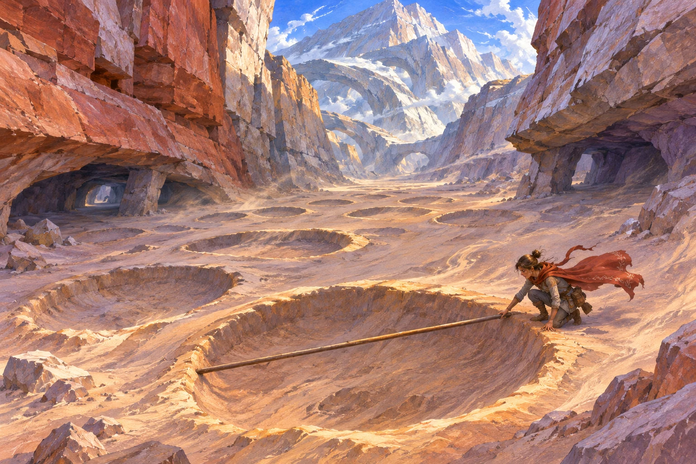
Расселина с песчаным дном и низким навесом между ногами гор, куда не задувает ветер. Песок здесь сухой и мелкий, как мука, и хранит каждый след: в нём лежат отпечатки каменных ног, большие и малые. Справа от песчаной полки нависает каменный козырёк, о который легко ушибить стопу.
Коленный амфитеатр
Полукруг уступов вокруг ровной чаши, как скамьи вокруг площадки для танцев. Ветер бежит здесь кругом по ступеням и возвращается туда, откуда пришёл. Здесь долго сидел холм из косых плит, на который никто не обращал внимания, — пока не встал. С верхних уступов хорошо видно дно чаши.
Косой мост
Природная каменная дуга над неглубокой расщелиной, широкая с одного края и острая с другого, будто её сточило ветром с одной стороны. В швах дуги тонко посвистывает, когда через мост гонит пыль. Камень моста прохладный и шершавый, и по утрам на нём долго не высыхает роса.
Разомкнутое кольцо
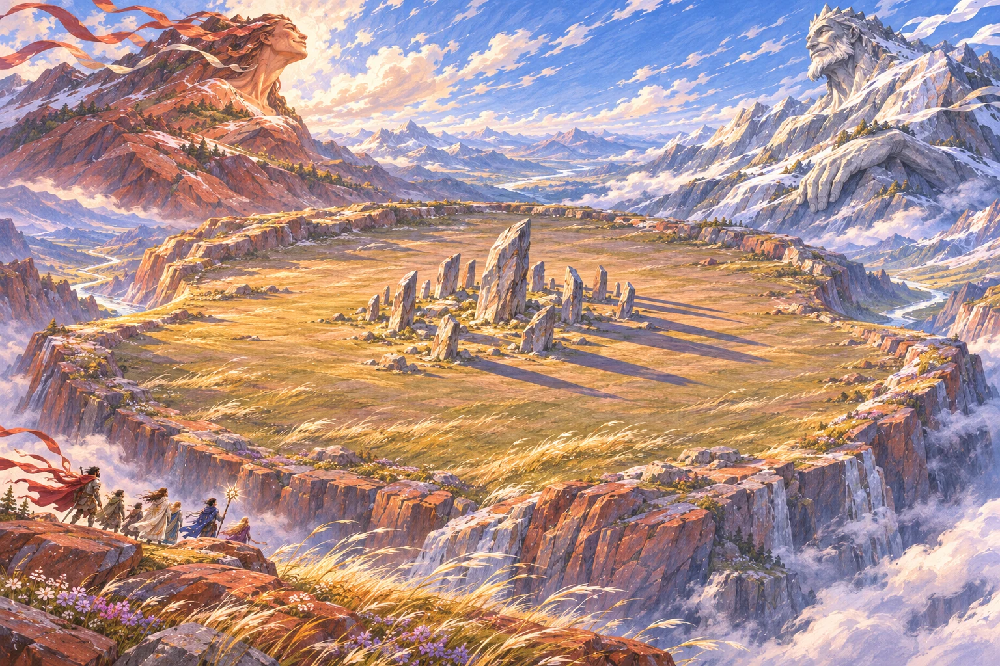
Почти круглая каменная площадка, разомкнутая с двух сторон: выходы смотрят друг на друга, западный — вниз, к Кругу двух подножий, восточный — к полке у разлома. Посередине лежит россыпь плит, заметный островок по пояс человеку. Ветер ходит по краю площадки, как по краю чаши.
Высокий разлом
Узкий разлом между вершинами двух гор, к которому ведут все восемь шагов свадьбы. К восьмому шагу вершины нависают над ним, и между ними остаётся щель шириной в шаг. Ветер свистит в ней, как в горлышке кувшина, а по краям гребня тянутся внутренние складки с ровным дном.
Круг двух подножий
Низкая округлая долина у подножий, где красный камень Аремы и серебряный камень Торвена подходят почти вплотную, разделённые только полосой травы. Через круг проходит нижняя дорога ходоков. Здесь тихо, ветра почти нет, а голоса гор слышны снизу, через камень.
Дом ходоков
Небольшой дом на неподвижной скале между ногами гор — единственное место в Венце, которое не сдвинется ни на шаг, сколько бы ни ходили горы. Стены пахнут смолой и мелом. На стене висят ленты, верёвки и рисунки склонов, а на крыше ветер рвёт ленты, все в одну сторону.
Предметы
Вечер 1
Красная крошка с пятки
Тёплый красный камешек размером с ноготь, шершавый с одной стороны и гладкий с другой. Если положить его на ладонь, он тихо гудит, как шмель в закрытой горсти.
Прижатая к любому камню, крошка передаёт Ареме одно короткое слово держащего: «стой», «жди» или «сейчас». Слово доходит с задержкой в один вдох. Так подают знак, когда Арема не видит ходока: например, при скрытом старте или остановке из-за её спины. Знак «веду» в точке постановки крошка не заменяет, его подаёт лента. В вечер 8 через крошку можно показать Ареме сложенную ленту или сказать «вниз». Бросок не нужен. Крошка работает только с Аремой, Торвена она не слышит. Пока горы дальше 17 пролётов («Не видят друг друга»), слово до Аремы не доходит; постановку тогда показывают рукой и голосом с нижнего уступа, и стопа «села сама».
Вечер 1 · улика
Складная дощечка Яра
Две липовые створки на кожаном ремешке. Внутри натянута тонкая бумага, к ремешку привязан угольный карандаш. Края стёрты до гладкости, на левой створке тёмное пятно от угля.
На дощечке срисовывают следы: форму отпечатка, глубину и то, внутри чего он лежит, в борозде, в осыпи или на ровном песке. Два рисунка рядом можно сравнить. Так проверяют разницу между правым и левым следом третьей фигуры в вечерах 1 и 2, и особенно в Сухом зеве. Срисованное остаётся у стола, даже если следы потом засыпало. Дощечкой можно перерисовать карту Неми, если её нужно показать всем. Броска не требует. Во встрече «Пыльники над следами» каждая срисованная группа следов считается выполненным делом.
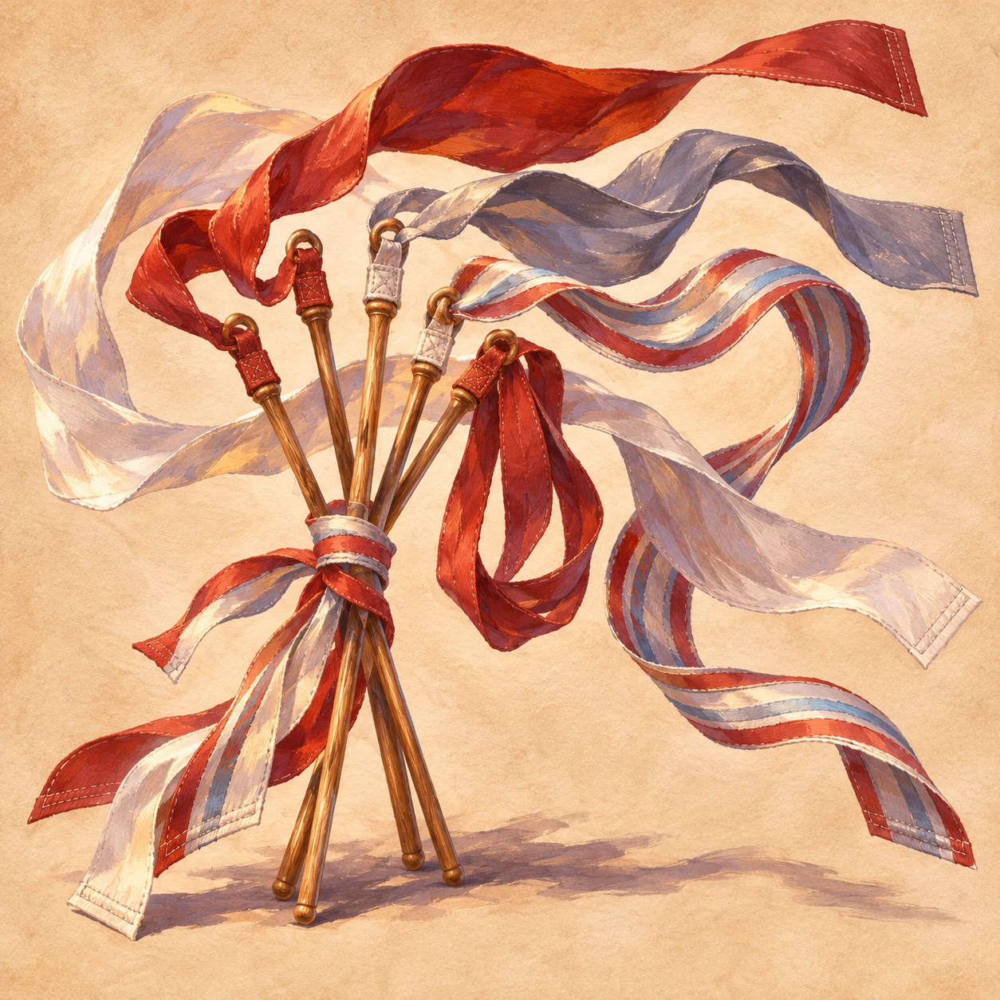
Вечер 2
Ленты ходоков
Связка длинных лент на деревянных планках, по одной на каждого ходока. Ленты красные, серые, белые и полосатые. Концы у всех пришиты к планке так, что ленту можно поднять, вытянуть вбок или сложить вдвое одним движением.
Лента делает знак видимым для лица горы издалека. У знака три положения: поднятая значит «веду», горизонтальная «жди», сложенная «остановись». Цвет значения не меняет. С близкой полки вместо ленты годятся рука и голос. Гора повторяет знак гулом, это значит, что она его увидела. Пока знаки не согласованы с обеими горами в Доме ходоков, ленты остаются просто яркими тряпками. После согласования каждый ходок берёт свою ленту, и общая доля в шаге становится возможной. Броска не требует.
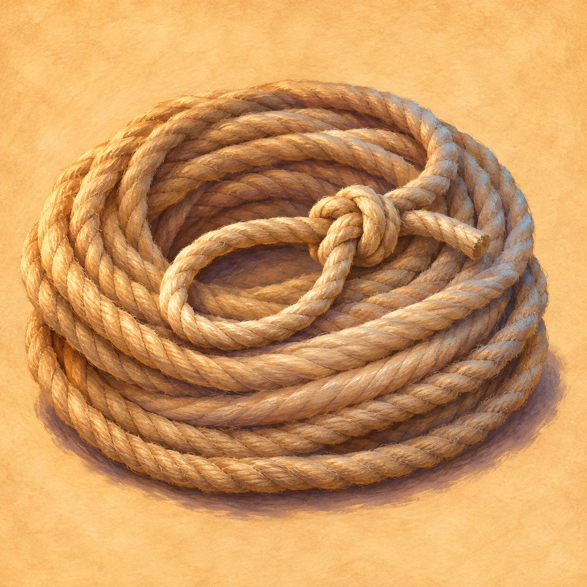
Вечер 2
Верёвка с открытой петлёй
Крепкая толстая верёвка из светлой пеньки. Один её конец всегда сложен аккуратной открытой петлёй, как у Ирдо. Узел там затянут давно и намертво, а середина верёвки потёрта о камень.
Ходок, привязанный к выступу, не соскальзывает вниз, когда склон кренится, и проверку на удержание не бросает. Но пока он привязан, он не сходит с места в эту фазу шага и действует только в пределах верёвки. В вечер 8 ведущего гору, привязанного к своему сигнальному камню, урон не сбивает: его знак держится. Верёвку можно передать другому ходоку, но только до начала фазы. Броска не требует.
Вечер 2 · улика
Рисунок Эши
Дощечка, оставленная на камне у выхода из зева. На ней угольный рисунок: длинная горизонтальная фигура на четырёх палочках, рядом стрелка, уходящая в линии осыпи, а под ней несколько строк мелким почерком.
Это запасной путь к свидетельству Эши, если её не спросили лично. Когда ходоки находят дощечку, ведущий читает вслух раздатку «Свидетельство Эши». Рисунок можно взять с собой и показать другим: Веку, Ломану, Ирдо. Реакции НИП определяет ведущий по их знаниям. Вывод из рисунка делают сами игроки, бросок не нужен. Если Эша уже рассказала всё лично, дощечка остаётся на столе как напоминание.
Вечер 3
Кварцевая щепка Торвена
Прозрачная щепка размером с палец. Внутри неё тянется тонкая светлая жилка, а на солнце щепка светится изнутри холодным белым светом. На ощупь гладкая, чуть прохладная.
Поднесённая к глазу, щепка показывает Торвену то, на что смотрит держащий её. Так ему показывают постановку на его слепом нижнем пути и подают скрытое «сейчас», которое не заметят глаза Ломана. Щепка работает только с Торвеном и только пока держащий смотрит на нужное место. Её могут держать разные ходоки по очереди. Пока горы дальше 17 пролётов («Не видят друг друга»), Торвен в неё не смотрит; постановку тогда показывают рукой и голосом с нижней площадки, и стопа «села сама». Броска не требует. В вечерах 6 и 7 Сафф через щепку сам видит постановку и разведывает её без дела ходоков. В вечер 8 она годится, чтобы подсказать Торвену, куда смотреть.
Вечер 4 · улика
Свистящий осколок
Пёстрый осколок размером с ладонь. Одна половина красная, другая серебряная, и между ними тонкая трещина, набитая мелкой крошкой. Он лёгкий и на любом ветру тихо свистит.
Осколок подтверждает наблюдение за правым коленом Ломана и позволяет проверить его выводы руками. Рядом с камнем Аремы красная половина гудит, рядом с Торвеном гудит серебряная. Это можно показывать Ломану, Эше, Веку или самим горам. Если Эша или Ломан видят осколок, они реагируют по своим знаниям. Вывод о том, как устроена нога Ломана, делают сами игроки. Броска не требует. Осколок можно положить на камень и послушать, как свистит шов.
Вечер 5
Карта вторых постановок
Длинный лист на деревянных планках, исчерченный тонкими линиями склонов, цифрами и сторонами света. В нескольких местах нарисованы пустые кружки, обведённые мелом и подписанные мелкими цифрами.
На карте нанесены вторые постановки для Косого моста, Разомкнутого кольца и Красного плеча. Кружками обведено то, чего Неми со своего плеча не видит. Каждую вторую постановку нужно проверить ногами: это дело сцены 1 и обычно проходит без броска. Карту выдают вместе с раздаткой «Вторые постановки». Ходоки могут перерисовать её на дощечку Яра. Если Неми рядом, она подтверждает числа и стороны света. Карта сама не ставит стопу и не заменяет разведку, она только показывает, где искать.
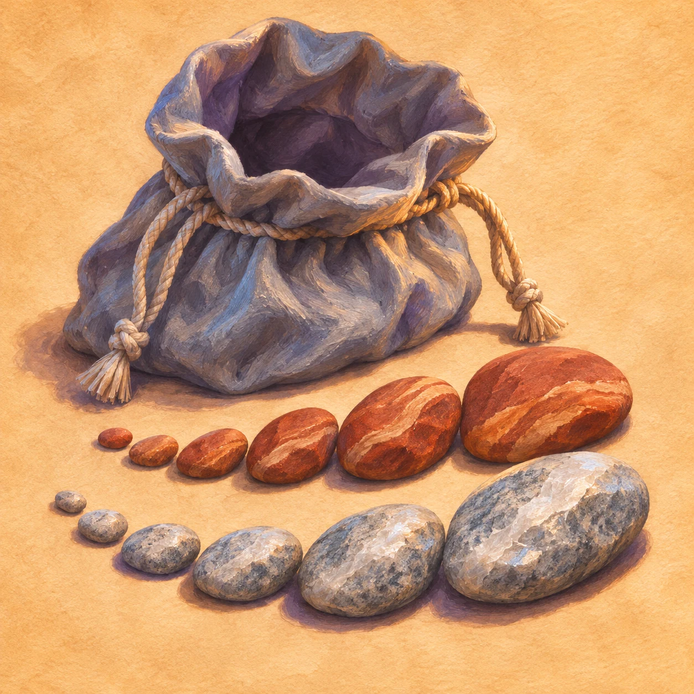
Вечер 6
Две дуги Руны
Мешочек из серой ткани с завязкой. В нём лежат гладкие камешки: красные и серебряные. Они разложены на две дуги, и в каждой дуге камешки лежат по росту, от мелких к крупным.
Руна отдаёт дуги ходокам, когда обе горы отдельно подтвердили нижний рисунок. Это знак, что нижний рисунок согласован, и ведущий отмечает это на дорожке шагов. Дуги можно носить с собой и положить на камень в нужный момент. Без согласия обеих гор они остаются красивыми камешками. В вечер 8 их показывают, если нужно напомнить Ареме и Торвену, о чём они договорились. Броска не требует.
Вечер 7
Сигнальные камни
Два плоских камня размером с большую ладонь, каждый с отверстием для ленты. Один красный с вкраплениями красной крошки, другой серебряный с прожилкой кварца. Оба тёплые на солнце и гудят, если приложить ладонь.
В вечер 7 ходоки несут оба камня по гребню Красного плеча: красный поднимают на западную вершину Аремы, серебряный у седловины забирает Сафф и несёт по ребру на восточную вершину Торвена. Несущий движется вдвое медленнее, передать камень — действие. Упавший несущий соскальзывает в складку, а камень катится в разлом и застревает на уступе над Ломаном. В вечер 8 с красного камня ведут Арему, с серебряного Торвена. Потерянный камень можно вернуть делом сцены 1 вечера 8; пока его нет, эту гору ведут только с общего камня у щели. Общий камень ведёт обе горы, только если оба камня донесены в вечер 7. Броска не требует.
Фигуры противников
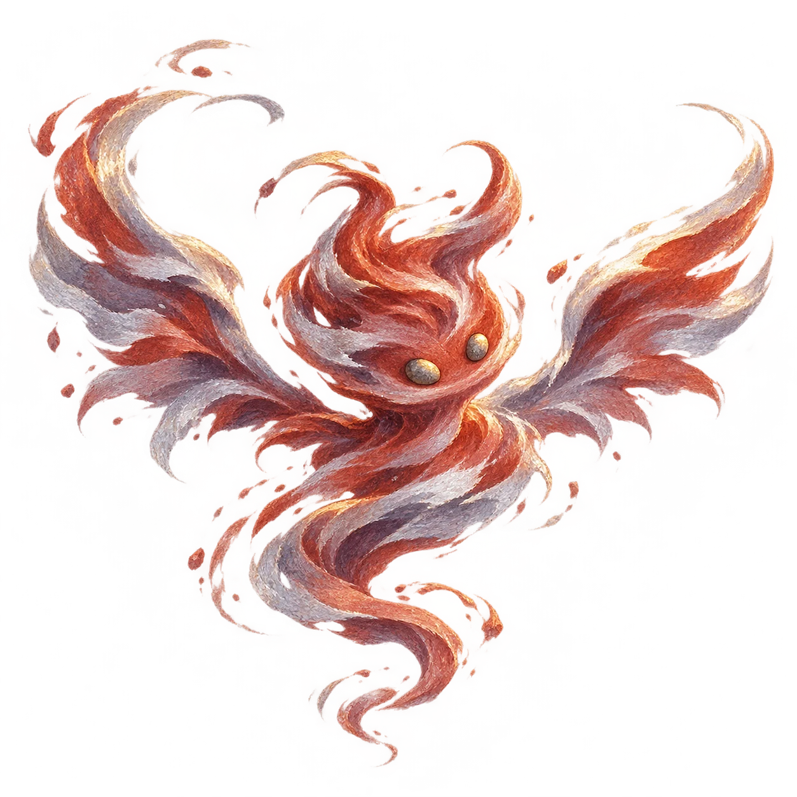
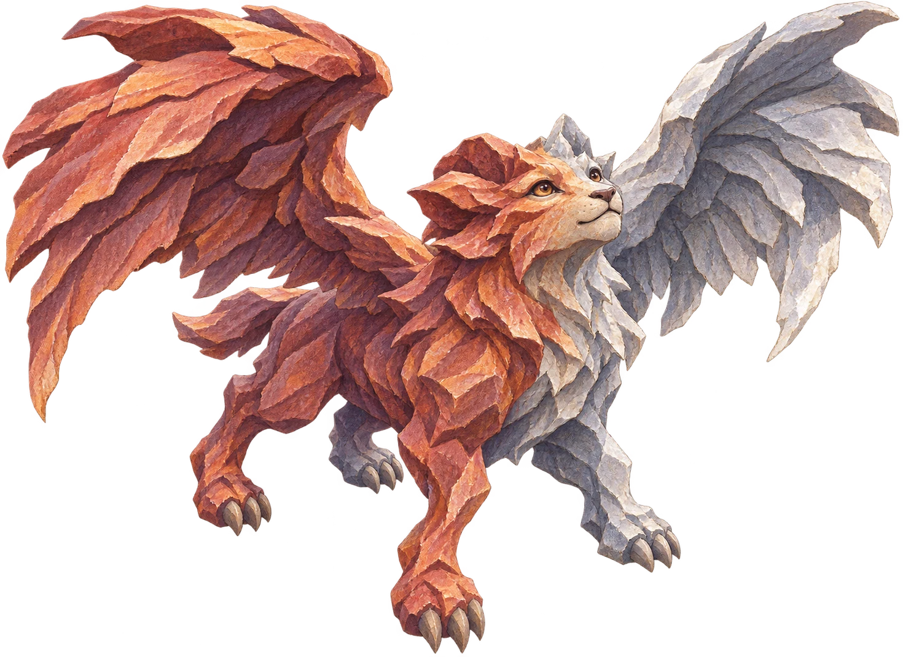
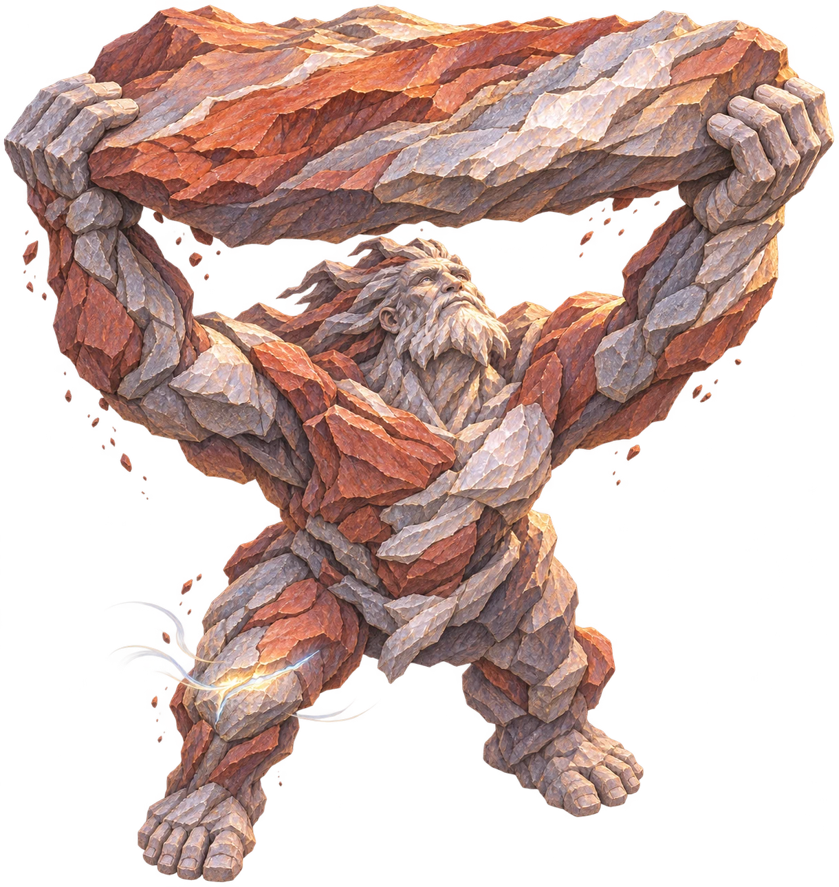
Арема
4700 лет. Красный склон с широкими каменными бровями; лицо появляется на той поверхности, к которой она сейчас обращается. Живая красная гора, которая сама выбрала брак с Торвеном и ведёт шествие с запада.
Место: Пяточная терраса
Намерение
Дойти до Торвена восемью шагами и коснуться его вершиной; при этом сохранить свой силуэт, особенно наружный выступ плеча, который она любит, как шаль.
Собственные знания
Я не вижу своей спины, своей пятки и места, куда ставлю ногу.
Шаг я могу остановить и вернуть, пока не перенесла вес; последний наклон вершины остановить нельзя.
На наружном выступе нет домов и троп; сто тринадцать лет назад я стояла на нём и не пошла дальше.
Красная крошка с моей пятки слышит меня, а я слышу её, если прижать её к камню.
Что говорит
При первой встрече. «Не пугайтесь… Я только… поднимаю пятку. Скажите мне… что за пяткой».
О Торвене. «Сто лет… я смотрела на него через долину. Вы — мои глаза».
О лентах. «Сложенная… остановись… это мне нравится. Ленты… как тогда, когда мы впервые говорили».
О наружном выступе. «Сто тринадцать лет назад… я шагнула к нему одна. И испугалась. Не высоты. Что он скажет „нет“».
Ломану. «Ты… мой страх. Прости… что я тогда остановилась».
О трещине Торвена. «Ты молчал… Тогда низко. Пусть ты… будешь цел».
В конце. «Теперь… стоим рядом. Век будем стоять… и я буду слышать ваши ленты».
Секрет или личное убеждение
Сто тринадцать лет назад она одна шагнула к Торвену и остановилась на наружном выступе плеча: испугалась. Из пыли того шага поднялся маленький красный камень. Она догадывается, что это был Ломан, и стыдится, что тогда остановилась. Пока её прямо не спросят о выступе или о красном камне Ломана, молчит.
Граница и раскрытие
Не знает строения Ломана, решений Торвена и того, что творится за её спиной, пока ей не расскажут. Не обещает сложить выступ заранее.
На вопрос о выступе (вечер 7) рассказывает о первом шаге и сама решает, сложить ли его.
Торвен
5100 лет. Серебристый пик с поперечной кварцевой полосой и спокойным лицом под нависающей гранью. Живой серебристый пик; согласился на брак и идёт с востока длинными точными шагами.
Место: Серебряное ребро
Намерение
Наклониться точно и вовремя, не торопя Арему; видеть, куда ставит ногу.
Собственные знания
Я вижу Высокий разлом, но не вижу свою ногу и свой нижний путь.
Кварцевая щепка с моего ребра показывает мне то, на что смотрит держащий её.
Под полосой у меня трещина.
Я могу сесть на корни, если понадобится нижний рисунок.
Что говорит
При первой встрече. «Свою ногу не вижу. Смешно… правда? Пять тысяч лет — и ни разу».
Об Ареме. «Она пошла… первой. Я так и знал. Сто лет ждал… ещё вечер подожду».
Через щепку. «Вижу… край. Ещё… не отводи. Вот она какая… моя нога».
О Ломане. «Не вижу его. Когда не видно… страшнее. Для горы… тоже».
О трещине. «Под полосой… трещина. Не пускайте… между нами чужой камень».
О нижней свадьбе. «Корни… есть. Если она попросит низко — сяду. Это тоже… брак».
В конце. «Смешно… Разлом больше не вижу. Вижу её. И… вас».
Секрет или личное убеждение
Под кварцевой полосой в его вершине старая внутренняя трещина. Если в касании между вершинами окажется чужой камень, удар расколет его. Он не сказал Ареме: боится, что она отменит высокое касание. Нижнюю свадьбу считает настоящей. О трещине знает только Сафф.
Граница и раскрытие
Не знает тактики Ломана, сигналов, о которых договорились без него, и желания Аремы насчёт выступа.
О трещине говорит сам, если герои спросят его о том, что будет при ударе; Сафф скажет то же, если спросят его (вечер 7). Если никто не спросил, Торвен говорит сам в сцене 1 вечера 8.
Ломан
113 лет. Исполин из косо сложенных плит; спина, руки и левая нога красные, правая нога и высокая тонкая верхушка пёстрые — красная крошка вперемешку с серебряным кварцем; длинные руки, плоские ладони. Незваный третий участник шествия; встаёт в чужие шаги, растёт и требует, чтобы на него смотрели.
Место: Коленный амфитеатр
Намерение
Перехватить размах свадебного касания и стать выше обеих вершин, самым высоким в Венце, чтобы на него смотрели всегда.
Собственные знания
Как складываться низко и как вставать в чужой шаг.
Удобнее всего вклиниться в того, кто первым начал поворот.
Можно лечь заранее туда, куда сядет стопа, и встать в опускающуюся.
Свист в правом колене — от ветра в шве; слева у него не свистит.
Верхушку можно отпустить пройтись по движущемуся камню.
Что говорит
При первой встрече. «Видите, какой я высокий? Видите? Вот! Теперь видели!»
О шаге. «Шаг — это когда двое тянутся, а третий успевает. Я успеваю!»
Когда лежит низко. «Не смотрите. Внизу я… длинный. Ни одной вершины».
Спрашивая ходока. «Эй, маленький! Скажи честно: я красивый? Я подожду. Недолго».
Узнав, откуда он. «Я… из её пыли? Из шага, который она бросила?.. Вот почему мне всегда мало».
На зов. «…Осыплется. Я знаю. Давно знаю. А вы смотрите на меня низкого. Только не смейтесь».
Секрет или личное убеждение
Краденая правая нога и верхушка держатся только на чужом движении; в тишине он оседает и ходит низко, на четырёх опорах, с плитой поперёк плеч, и стыдится этой фигуры. Знает, что его собственный камень красный, но не знает, чей. Знает, что верхушка может отделиться и пройти сама, если вокруг много движения: однажды пробовал на большом обвале. Боится, что после свадьбы горы встанут, и ему не на что будет опереться.
Граница и раскрытие
Не знает планов ходоков, скрытых маршрутов и решений гор; не читает мысли; не обязан поддаваться на очевидную приманку; будущего не знает.
Если ему показать знание низкой стойки (вечер 4), не отрицает: «Могу. Но вы видели, какой я тогда?» Если ему без насмешки предложат пройтись низко при всех (вечер 4, 6 или 8), отвечает: «Посмотрим. После свадьбы».
Эша Рваный Ритм
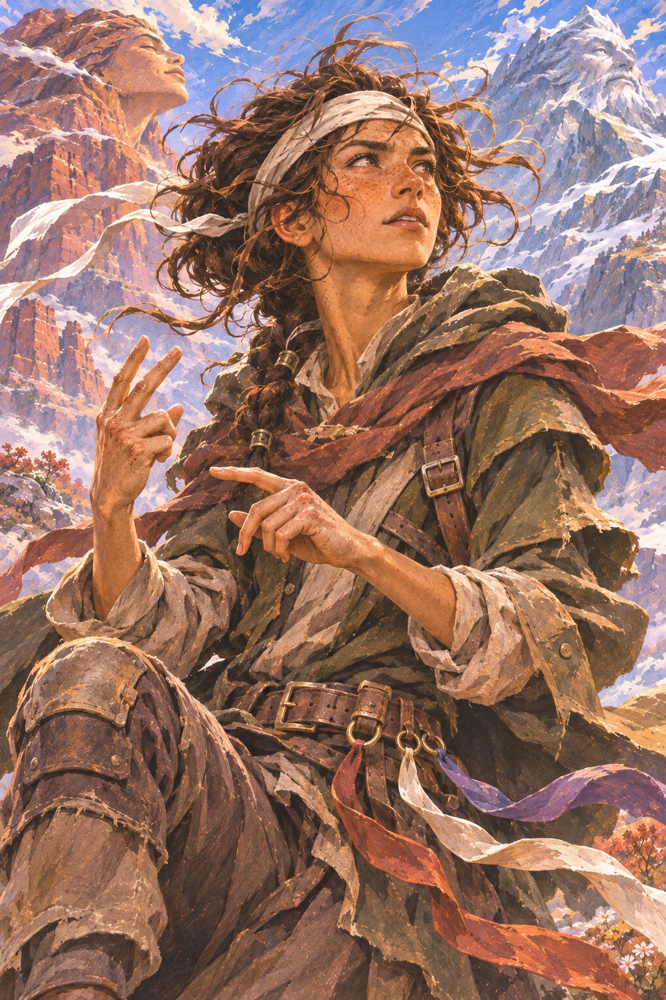
19 лет. Белая повязка, потёртые наколенники и три длинные ленты на поясе. Ходок, который изображает движения больших существ телом и рисунком.
Место: Сухой зев
Намерение
Чтобы ходоки поняли, как ходит Ломан, и не разбили его: ей хочется, чтобы у него появился собственный шаг.
Собственные знания
Ломан ночью прошёл под навесом низко, на четырёх опорах.
Встал он, только сунув правую ногу в движущуюся осыпь.
В правом колене у него свистит, слева нет.
Он сказал: «Красиво я выгляжу только наверху».
Тропа через зев выводит к Коленному амфитеатру.
Что говорит
При первой встрече. «Вот так он шёл: тук-тук, шшш — тук-тук. Видела сама. Что думаю — скажу отдельно».
О Ломане. «Думаю, ему одиноко. Но это я думаю, а видела я только, как он ходит».
О колене. «Говорит — значит, стоит. Замолчит — смотрите на колено. Справа свистит».
О его глазах. «Не в упор. Он стесняется. Смотрите сбоку, как я».
О своём желании. «Хорошо бы у него был свой шаг. Не чужой. Я бы под него ладонями отбивала».
В финале. «Тук… шшш — колено подломилось! Он там, на четырёх. Боится. Это видно».
Секрет или личное убеждение
Год ходит за Ломаном по ночам и немного его жалеет; думает, что ему одиноко. Боится, что ходоки захотят его сломать, поэтому сначала проверяет, смеются ли они над ним.
Граница и раскрытие
Не знает, откуда Ломан взялся, и не обещает, что он когда-нибудь согласится ходить низко.
На просьбу рассказать о Ломане сразу показывает его походку телом; бросок не нужен.
Ирдо Две Петли
54 лет. Короткая борода, широкая шляпа и верёвка, которую он всегда складывает открытой петлёй. Старший ходок; учит новичков вести горы лентой и возвращаться.
Место: Дом ходоков
Намерение
Чтобы сигнал знал тот, кто шагает, а ходоки возвращались со склона целыми.
Собственные знания
Внутренняя полка под острым краем Косого моста — проход и место для второй постановки.
В Доме ходоков есть ленты, верёвки с петлёй и два сигнальных камня для вершин.
Ходок всегда держит вторую постановку.
Резкий поворот плеча прячет знак от лица горы.
Что говорит
При первой встрече. «Сигнал должен знать тот, кто шагает. Не вы — гора. Привязанный не падает».
О ленте. «Лента без гула — что слово в колодец. Глядите на ленту, не вниз».
О своей границе. «Наверх не пойду. Открытая высота — не моя. Внутренняя полка — моя».
О ходоках. «Ходок всегда держит вторую постановку. Кто не держит — тот однажды ушибёт чужую ногу».
О Ломане. «Он больше не ждёт, кто начнёт. Он ждёт, куда вы придёте. Значит, приходите в два места».
О свисте. «Камень, который свистит в безветрие… я бы спросил, чей он».
Секрет или личное убеждение
Много лет назад он дал небольшому холму неверный знак, и тот ушиб ногу о скрытый выступ. С тех пор Ирдо не ведёт с открытой высоты и не стоит у точки постановки, а только проводит по внутренним полкам. Не стыдится, но не любит, когда от него ждут, что он пойдёт первым.
Граница и раскрытие
Не знает привычек Ломана, пока не услышит свидетельств; на открытую высоту не идёт; финал за игроков не планирует.
Когда его просят провести, сам называет свою границу и ведёт по внутренней полке.
Неми Длинная Черта
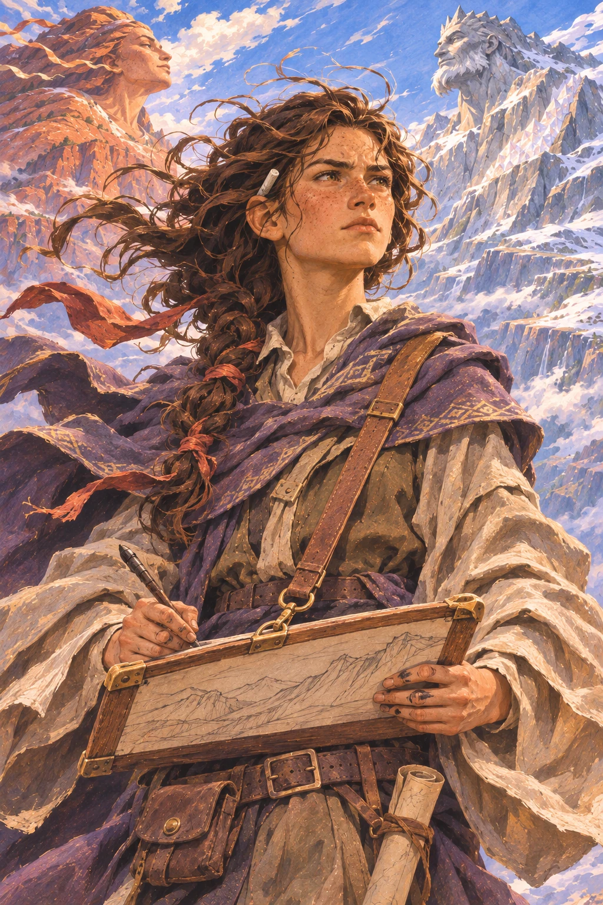
16 лет. Широкие рукава, дощечка на ремне и мел за ухом. Ходок Аремы; рисует карты видимых частей склонов.
Место: Красное плечо
Намерение
Чтобы её измеренный взгляд слушали наравне со старшими.
Собственные знания
С Красного плеча видно шесть уступов из девяти.
Вторые постановки для Косого моста, Разомкнутого кольца и Красного плеча нарисованы, но с плеча я их не вижу — проверять надо ногами.
Ведя стопу Аремы без ловушки, я ставлю её туда, где разведано.
Что говорит
При первой встрече. «Шестнадцать пролётов до Торвена. Точная стопа — минус черта. Это горы так считают, не я».
О точности. «Девять на запад, три на север. Не на глаз! На глаз — это к гадалке».
О второй постановке. «Я всегда рисую вторую постановку. Никто не спрашивал».
О видимом. «С плеча видно шесть уступов из девяти. Остальное — ваше, проверяйте ногами».
О кружке на карте. «Кружок — значит, проверьте. Не обижусь, если там иначе».
В финале. «От красного до щели шесть шагов, от общего — два. Три уступа я не вижу. Они ваши».
Секрет или личное убеждение
Давно рисует для каждого шага вторую постановку, но никто не спрашивал, и она молчит. Отдаёт карту в вечер 5, когда ходоки сами ищут другой выход, или раньше, если её прямо спросят.
Граница и раскрытие
Не знает чувств Аремы и того, где Ломан вне её поля зрения; вести стопу под ловушкой не берётся.
Показывает карту любому, кто спросит про «другое место».
Сафф Полосатый Рукав
37 лет. Полосатые рукава, короткая коса и маленькая зеркальная пуговица. Ходок Торвена; передаёт знаки формой ленты.
Место: Серебряное ребро
Намерение
Чтобы знак значил ровно то, о чём договорились, включая остановку; чтобы Торвен не остался один на последнем наклоне.
Собственные знания
Форма ленты читается без цвета.
Торвен видит Высокий разлом, но не свой нижний путь.
Под кварцевой полосой у Торвена трещина.
Стопу Торвена без ловушки я ставлю туда, где разведано.
Что говорит
При первой встрече. «Цвета не различаю. Форму — всегда. Повторю: поднятая — веду. Так?»
О знаках. «Повторю ещё раз. Он повторит. Мы не торопимся».
О плаще. «Плащ серый? Красный? Мне всё равно. Главное — накрыл».
О трещине. «Он просил не говорить. Но вы спросили про удар. Под полосой — трещина».
О камне. «Серебряный — до седловины, там возьму. Цвета не различаю, узнаю по весу».
В финале. «Повторю: поднятая — веду. Сложенная — вниз, если обе согласны. Так?»
Секрет или личное убеждение
Не различает цвета (не скрывает, шутит об этом). Знает о трещине под кварцевой полосой Торвена и обещал молчать; скажет, если его прямо спросят, чем опасен удар при касании.
Граница и раскрытие
Не знает, о чём договорились на стороне Аремы, пока ему не передали; свою догадку за решение пары не выдаёт; под ловушку стопу не ведёт.
При согласовании знаков повторяет каждое значение вслух и просит повторить гору.
Век Плоский
72 лет. Невысокий каменный человек с широкой плоской спиной и глазами в верхнем крае лица. Каменный человек Разомкнутого кольца; раскладывает на его краях камешки танцевальными фигурами.
Место: Разомкнутое кольцо
Намерение
Увидеть шаг, которого в Венце никто не видел, и сохранить свободные выходы кольца.
Собственные знания
У кольца два выхода: западный к Кругу двух подножий, восточный к полке у разлома.
За центральной россыпью низкую фигуру с восточной полки не видно.
Прошлой ночью через кольцо прополз длинный низкий камень на четырёх опорах.
Низкий камень стоит сам — так стоит и он, Век.
После свадьбы горы встанут на век; всё, что стоит на чужом ходу, тогда ляжет, а камень, который стоит сам, останется.
Что говорит
При первой встрече. «Я не дверь и не замок. Я посмотреть пришёл».
О камнях. «Низкий камень стоит сам. Высокий стоит на ветре».
О свадьбе. «После свадьбы они встанут. На век. Всё, что стоит на чужом ходу, тогда ляжет».
Ломану. «Пройдёшься со мной низко? Такого шага в Венце никто не видел».
Подставляя спину. «Лента наверх. Я не двинусь. Я и есть скала».
В финале. «Я пришёл посмотреть, только посмотреть. Низкий камень… тоже гость».
Секрет или личное убеждение
Восхищается низкой походкой Ломана и хочет пригласить его пройтись вместе через кольцо. Это вкус Века, а не знание тайны.
Граница и раскрытие
Не знает, что умеет Ломан, кроме того, что видел; не держит исполина силой и ловушкой не служит.
Показывает выходы; предлагает свою плоскую спину как место для общего знака.
Руна Сторона Света
29 лет. Зелёный плащ с крупными белыми нашивками и длинный дорожный посох. Ходок нижних путей; знает подходы к обеим горам снизу.
Место: Круг двух подножий
Намерение
Чтобы ходоки знали дорогу вниз раньше, чем пойдут наверх.
Собственные знания
Нижний рисунок: ноги гор сходятся в Круге двух подножий, вершины не касаются.
Просить об этом надо каждую гору отдельно и до последнего наклона.
Круг закроется для ходоков навсегда.
К кругу ведёт западный выход Разомкнутого кольца.
Что говорит
При первой встрече. «Сначала — как вернуться. Потом — куда идти. Западный выход ведёт вниз».
О круге. «Круг закроется. Моя дорога. Ничего: я найду другую».
О нижнем рисунке. «Ноги гор сходятся в круге, вершины не касаются. Это тоже брак, не меньше».
О просьбе. «Просить надо каждую гору отдельно. И до последнего наклона. Потом — поздно».
В последний раз. «Последний раз спрашиваю. Потом — поздно, и это не моя воля, а их».
О верхней дороге. «Верхнюю дорогу потом, может, и не откроют. Я не обещаю. Я показываю».
Секрет или личное убеждение
Предпочла бы нижнюю свадьбу, но предложит её, а не потребует. Знает, что нижний рисунок навсегда закроет нижнюю дорогу ходоков через круг, её собственную дорогу, и всё равно его предлагает.
Граница и раскрытие
Не знает, что выберут горы и ходоки; не обещает, что верхнюю дорогу потом откроют.
На просьбу показать другой путь раскладывает две дуги камешков и проходит их с ходоками.
Возможные финалы
Горы женаты
Условия: В вечер 8 отмечена последняя доля наклона: в конце раунда обе горы ведены, и ни одна клетка Верхушки Ломана не стоит в щели касания; при росте Ломана 8 и выше она к тому же не стоит на ногах рядом со щелью (длинная рука считается в щели).
Вершины касаются, ветер один раз проходит свистом через место касания и стихает; камень срастается красно-серебряной аркой над разломом. Краденая верхушка без чужого движения осыпается: красные плиты сползают к Ареме, серебряные к Торвену. Ломан остаётся в разломе низким, на четырёх опорах; если его позвали и он отозвал верхушку, он на глазах у всех проходит под аркой своим низким шагом; Век идёт рядом, а Эша отбивает ладонями его ритм — его собственный шаг. Арема и Торвен говорят ходокам по одной долгой фразе через камень.
Цена: Горы встанут неподвижно на век: шествий больше не будет при жизни героев. Если в вечер 7 Арема сложила наружный выступ, её плечо навсегда другое. Ломан не обещает дружбы, а если его не звали, лежит под аркой молча и смотрит вверх.
Эпилог — читать вслух
Над Высоким разломом стоит красно-серебряная арка, и ветер один раз проходит через место касания свистом, а потом стихает. Арема и Торвен стоят рядом — неподвижно, как будут стоять ещё сто лет. Краденая верхушка Ломана осыпалась без чужого движения: красные плиты сползли к Ареме, серебряные к Торвену, и каждая вернулась туда, откуда её взяли. Если Ломана позвали и он отозвал верхушку, он на глазах у всех прошёл под аркой низким шагом, на четырёх опорах; Век шёл рядом, тоже низко, а Эша отбивала ладонями его ритм — тук-тук, шшш, его собственный. Если не звали, он лежит под аркой молча и смотрит вверх. Горы говорят ходокам по одной долгой фразе через камень, и эти фразы потом передают в Доме ходоков из уст в уста. Шествий больше не будет при жизни героев: горы встали на век. Если Арема сложила наружный выступ, её плечо навсегда другое, и она этим довольна. Ломан не обещает дружбы. Но под аркой теперь есть место и для низкого камня.
Свадьба у подножий
Условия: Нижний рисунок согласован (обе горы подтвердили его до начала последнего наклона), и до последней доли ведущий гору поднял сложенную ленту — она отменяет долю этого раунда и сильнее касания; либо шестой раунд наклона кончился без касания при согласованном рисунке.
Вершины отклоняются назад, Верхушка теряет опору и с грохотом сползает в разлом, где рассыпается на плиты; Ломан ловит часть из них и встаёт высоким. Горы опускают плечи, их ноги сходятся в Круге двух подножий, красный и серебряный камень срастаются кольцом; ходоки спускаются по плечам в круг. Это настоящий брак, выбранный горами заранее.
Цена: Вершины не коснутся никогда; нижняя дорога ходоков через Круг двух подножий закрыта навсегда. Ломан стоит выше склонённых вершин и хвастает, пока горы неподвижны и его краденая высота медленно осыпается.
Эпилог — читать вслух
Вершины не коснулись. Сложенная лента поднялась над гребнем, и горы отклонились назад — медленно, бережно, словно кланяясь друг другу. Верхушка Ломана потеряла опору и с грохотом сползла в разлом, где рассыпалась на плиты; Ломан поймал часть из них и встал высоким, выше склонённых вершин, и теперь хвастает, пока горы неподвижны, а краденая высота медленно осыпается с его плеч. Арема и Торвен опустили плечи, и их ноги сошлись в Круге двух подножий: красный и серебряный камень срослись кольцом. Ходоки спустились по плечам прямо в круг и стояли там, пока камень гудел под ногами. Это настоящий брак, выбранный горами заранее, а не утешение за неудачу. «Низко… тоже вместе», — говорит Арема. Вершины не коснутся никогда. Нижняя дорога ходоков через круг закрыта навсегда, и Руна первой ищет новую — в обход, по старым козьим тропам. Торвен цел: трещина под кварцевой полосой не узнает удара. А ходоки до старости будут рассказывать, как стояли внутри кольца, которое только что было двумя горами.
Горы разбиты
Условия: Шестой раунд последнего наклона кончился без касания, а нижний рисунок не согласован. Если в этот миг Верхушка стоит в щели (или, при росте 8+, стоит на ногах рядом с ней — длинная рука), вершины бьют в краденый камень; иначе падают назад на стены разлома.
Вершины бьют в краденый камень (или, не дотянувшись, падают назад на стены разлома). Торвен раскалывается по трещине под кварцевой полосой, его вершина откалывается и падает в разлом; плечо Аремы трескается. Горы медленно расходятся: «Не в этот век…». Если удар пришёл в Верхушку, весь размах уходит Ломану: он встаёт выше обеих вершин и впервые молчит. Ходоки лежат во внутренних складках, все живы.
Цена: Свадьбы не будет сто лет; кольцо Медного Венца разорвано. Ломан — самый высокий в Венце, пока горы, раненые, бродят и дают ему чужое движение.
Эпилог — читать вслух
Последний наклон кончился без касания. Вершины ударили в краденый камень — или, не дотянувшись, упали назад на стены разлома, — и Торвен раскололся по старой трещине под кварцевой полосой. Его вершина откололась и рухнула в разлом с грохотом, который слышали в самом Доме ходоков. Плечо Аремы треснуло. Горы медленно расходятся в разные стороны, и голос Аремы приходит через камень тихо, как осыпь: «Не в этот век…» Если удар пришёлся в Верхушку, весь размах ушёл Ломану: он встал выше обеих вершин, самым высоким в Венце, и впервые молчит. Ходоки лежат во внутренних складках, живые, в пыли, и смотрят, как уходят две раненые горы. Свадьбы не будет сто лет. Кольцо Медного Венца разорвано. Горы будут бродить по долине, раненые, и давать Ломану чужое движение, на котором он стоит. Ирдо складывает верёвку открытой петлёй и долго молчит. Потом говорит: «Через сто лет кто-нибудь снова поднимет ленту. Надо, чтобы он знал, что мы видели». И садится записывать.
Раздатки · выдавать постепенно
Дорожка шагов — Вечер 1: сразу после вступительного текста, лежит на столе до конца кампании; ведущий двигает отметки карандашом при игроках.
Письмо двух вершин — Вечер 1, конец сцены 2: когда Арема опустила пятку и Огняна получила красную крошку.
Три формы ленты — Вечер 2: когда обе горы повторили все три знака гулом.
Свидетельство Эши — Вечер 2 или 3: после рассказа Эши или когда ходоки находят её подписанный рисунок у выхода из зева.
Что сказал Ломан — Вечер 4: после разговора с Ломаном о низкой стойке, когда ему показали рисунок Эши или следы.
Записка Века — Вечер 6: после обхода выходов Разомкнутого кольца или разговора с Веком.
Нижний рисунок — Вечер 6 (или 7): когда группа прошла дуги с Руной и спросила каждую гору отдельно.
Последний наклон — Конец вечера 7: ходоки вписывают, кто где встанет; ведущий читает строки о ленте, сложенной ленте и долях вслух в начале сцены 2 вечера 8.
Как читать игровые проверки
Проверки характеристик и навыков, переговоры, часы и последствия из книги разрешает ведущий. Они не являются дополнительными автоматическими правилами приложения. Улики доступны без обязательного успешного броска. Подготовленные встречи начинаются только по решению ведущего; исходы и эпилоги заранее не записаны.
Статус подготовки
Кампания переработана: скелет и редактура — Claude Opus 5.5, текст — Claude Sonnet 5.5 через API проекта, иллюстрации (43) — генерация изображений OpenAI в одном стиле; подробности в README. Живой плейтест с людьми ещё не проведён. Локальная папка с исходниками и книгой предназначена ведущему.